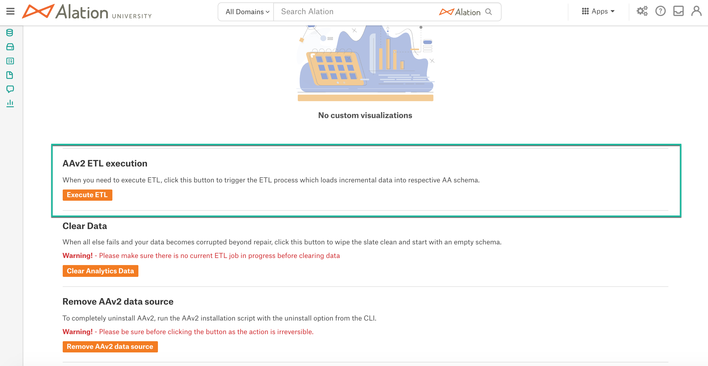

Alation Analytics V2 ETL¶
Alation Cloud Service Applies to Alation Cloud Service instances of Alation
Customer Managed Applies to customer-managed instances of Alation
Note
Alation Cloud Service customers can request server configuration changes through Alation Support.
Available from version 2020.3
Alation Analytics V2 ETL Explained¶
When you first initiate the Alation Analytics V2 database in Alation, it contains no data. The data will be loaded by the Alation Analytics ETL job. The ETL process extracts the data from the Alation internal server database (Rosemeta) and transforms and loads it into the Alation Analytics V2 database.
By default, ETL is configured to run daily at 3:59 AM for a range of 180 days. After the initial ETL job, each consecutive ETL job is incremental and adds more data based on the configured ETL range.
As it runs daily, ETL sequentially loads all available usage data achieving the current state of Rosemeta in Alation Analytics V2. After that, ETL only extracts the delta of the data added to the internal database since the time of the previous ETL job. Before this state of the Alation Analytics database is achieved, ETL continues to add data incrementally picking up from the end date of its previous run and adding the next range of data.
The first ETL job starts with loading the earliest available data from the date when the very first user was created in Alation. Depending on the volume of the data in the internal server database, the first ETL job may take longer than consecutive jobs.
ETL Cut-off¶
2021.2 and Newer¶
For the ETL job, the cut-off timestamp of the data is the start time of the current ETL job. This means that the daily incremental ETL process extracts the delta of the data between the previous ETL start time and the current ETL start time (or the data added between the previous and the current ETL jobs).
2020.3 - 2021.1¶
For every ETL run the cut-off timestamp of the data is 1:00 AM of the present day. This means that for every Alation Analytics table updated by ETL, each ETL run loads the data with the timestamp before 1:00 AM of the present day, but not later. With the default ETL schedule, the daily ETL starts at 3:59 AM and loads the delta of the data between 1:00 AM of the previous day and 1:00 AM of the present day.
ETL Stages¶
Refer to the diagram below for the stages of ETL:
{kind=link}
Stage 1: When the ETL job is started, the Celery task queue creates Extract jobs to extract data from the applicable source tables.
Stage 2: The Extract jobs are sent to the
ETL Manager. It gets all the job keys from a key-value store and calls the extract method for each key.Stage 3: The ETL Manager extracts data from the applicable source tables for a range of dates. The default range is six months worth of data. It first gets the start date from the
etl_checkpointtable in the Alation Analytics V2 database. If the source table is not logged in theetl_checkpointtable, which is the case after Alation Analytics V2 is just installed, it takes the minimum date from theuserstable as the start date. This date is the date the first catalog user was created.Stages 4 and 5: The ETL Manager extracts data from the Internal Rosemeta database in 300 record chunks and pushes the records as JSON messages to the RabbitMQ message broker that is running in a Docker container installed on the local or remote server. The ETL Manager continues to push messages to RabbitMQ until the range of dates is completed.
Stages 6 and 7: Transform consumers subscribe to the RabbitMQ queues with the routing key. Each transform consumer receives a data push from RabbitMQ. The transform will consume and massage the data. It then loads the data into the appropriate Alation Analytic V2 tables.
Stage 8: After all the records are loaded, the
end_datefor each load is logged to theetl_checkpointtable and an acknowledgement is sent to RabbitMQ.
ETL Parameters¶
Some aspects of the ETL process for Alation Analytics V2 are configurable using alation_conf. You can:
Disable or enable the scheduled ETL process.
Change the default schedule and time period for ETL to better suit your needs.
The table below contains the parameters that can be changed to adjust the ETL process.
Parameter |
Value |
Description |
|---|---|---|
|
Default: |
Enables or disables the ETL job. The default value |
|
Number of days Default: |
Sets the range for ETL. The ETL job loads data
for this period starting from the date
of the last ETL recorded in the
|
|
Number(s) 0-6 or
Default: |
The day(s) of the week for ETL:
|
|
Number 0-23 Default: |
Sets the hour for ETL. |
|
Number 0-59 Default: |
Sets the minutes of the hour for ETL. |
Configure ETL¶
Note
Alation Cloud Service customers can request server configuration changes through Alation Support.
To perform the configurations described below, enter the Alation shell:
Use SSH to connect to your Alation server.
Enter the Alation shell.
sudo /etc/init.d/alation shell
If you are going to configure multiple parameters, you can perform one restart of the Alation server after completing all required configurations and exit the shell using the exit command.
Extraction Time Period¶
To configure the current ETL extraction time period:
Using the alation_conf command, display the current value of the parameter
alation_analytics-v2.extract.time_period.alation_conf alation_analytics-v2.extract.time_periodThe output displays the current value, for example:
alation_analytics-v2.extract.time_period = 180.To set a new range, use the following command, replacing
<number of days>with the number of days to extract with ETL.alation_conf alation_analytics-v2.extract.time_period -s <number of days>
Restart Alation.
alation_action restart_alation
ETL Schedule¶
The default setting for the ETL schedule is every day, at 3:59. To view the current ETL schedule using alation_conf, run the following command:
alation_conf alation_analytics-v2.etl
The output displays all parameters with the string alation_analytics-v2.etl in their names:
alation_analytics-v2.etl.schedule.day = * alation_analytics-v2.etl.enabled = True alation_analytics-v2.etl.schedule.minute = 59 alation_analytics-v2.etl.schedule.hour = 3
From version 2022.3, you can use more advanced scheduling options to schedule the ETL process as the parameters as the corresponding alation_conf parameters accept more advanced cron expressions. Note that you still need to use three separate parameters to assemble a cron-based schedule.
Do not use spaces when specifying multiple values. Use a comma as a separator. When using a cron expression, place it into single quotes, for example: '6,0'.
Important
Restart the celery-beat component after changing the values of the ETL schedule parameters.
Day¶
Use the parameter alation_analytics-v2.etl.schedule.day to schedule ETL on specific days of the week. You can specify one day using the numbers 0–6 or use a more advanced expression to specify multiple days.
All versions
*— All days of the week
3— On Wednesdays
'1,2,3'— On Mondays, Tuesdays, and WednesdaysFrom version 2022.3
'1-5'— Weekdays only
'1-4,0'— Every day from Monday to Thursday and on Sunday
alation_conf alation_analytics-v2.etl.schedule.day -s '1-4,0'
Hour¶
Use the parameter alation_analytics-v2.etl.schedule.hour to schedule the hour. You can either set the exact hour using the numbers 0–24 or use a more advanced expression to schedule the process at specific intervals.
All versions
3— At the 3rd hour of the day
'5,22'— At the 5th and 22nd hours of the dayFrom version 2022.3
'*/6'— Every 6 hours
alation_conf alation_analytics-v2.etl.schedule.hour -s '*/6'
Minute¶
Use the parameter alation_analytics-v2.etl.schedule.minute to schedule the minutes of the hour. You can either set the exact minute of the hour using the numbers 0–59 or use a more advanced expression to schedule the ETL process to happen every N minutes.
All versions
30— At the 30th minute of the hourFrom version 2022.3
'*/15'— Every 15 minutes
alation_conf alation_analytics-v2.etl.schedule.minute -s '*/15'
Restart celery-beat¶
Changing values of the scheduling parameters requires a restart of the celery-beat component.
alation_supervisor restart celery:celery-beat
Troubleshooting¶
The alation_conf utility does not validate the correctness of cron expressions. If an incorrect expression is provided to any of the parameters, the restart of celery-beat will fail and errors related to crontab_parser will appear in celery-beat_error.log, for example:
raise ValueError('Invalid weekday literal {0!r}.'.format(s)) ValueError: Invalid weekday literal ' */45'.
Make sure that you use valid cron expressions when setting up the ETL schedule in alation_conf.
Enable or Disable ETL¶
To disable or enable the scheduled ETL:
Use the parameter
alation_analytics-v2.etl.enabledto disable or enable the ETL process. For example, to disable the ETL, use the following command:alation_conf alation_analytics-v2.etl.enabled -s False
Restart Alation.
alation_action restart_alation
Run the Alation Analytics V2 ETL Manually on Demand¶
You can run the ETL process for Alation Analytics on demand from the Alation user interface or from the Alation server backend.
Triggering the ETL process will have no effect if all data has already been loaded into Alation Analytics V2 and when the Alation Analytics V2 database and Rosemeta are synchronized.
Note
If an ETL job is triggered while a query is running against the Alation Analytics V2 database in Compose, then the ETL job will take precedence over Compose and the query execution will be canceled. It can be rerun after the ETL job is completed.
Run ETL from the User Interface¶
Applies from version 2021.2
Server Admins can trigger the ETL process on demand on the Alation Analytics V2 admin settings page.
To begin the ETL process:
Log in to Alation as a Server Admin.
Go to the Admin Settings page by clicking the three gear icon on top right of the page.
In the Alation Analytics section, click the Alation Analytics link to go to the Alation Analytics admin settings page.
Scroll down to the AAv2 ETL Execution section.
Click the Execute ETL button to trigger the ETL process.
Note
The associated active tasks can be viewed in the Admin Settings > Monitor > Active Tasks section.
Each time you click the Execute ETL button, a new ETL process is queued by the Alation server.
Run ETL from the Server Backend¶
Applies to all versions
It is possible to trigger the Alation Analytics ETL from the backend of the Alation server:
Use SSH to connect the Alation server.
Enter the Alation shell.
sudo /etc/init.d/alation shell
Set user to
alation:sudo su alation
You can monitor the extraction process as it is happening. To monitor, open an additional Terminal window and prepare to tail the log celery-alationanalytics_error.log inside the Alation shell.
tail -f /opt/alation/site/logs/celery-alationanalytics_error.log
Return to the Terminal window where you are connected to the Alation shell as
alation. Navigate to the directory /opt/alation/django/alation_analytics_v2:cd /opt/alation/django/alation_analytics_v2
From this directory, run the
run_etl_jobsscript../one_off_scripts/run_etl_jobs
Exit from the Alation shell.
exit
You can rerun the one-off script as many times as needed to fully populate the Alation Analytics V2 database. For example, if your data catalog has been running for one year and the extract time period is set to 180 days, you would need to run the one-off script twice.
You do not have to wait to trigger the next ETL job. Each job is queued and run sequentially.